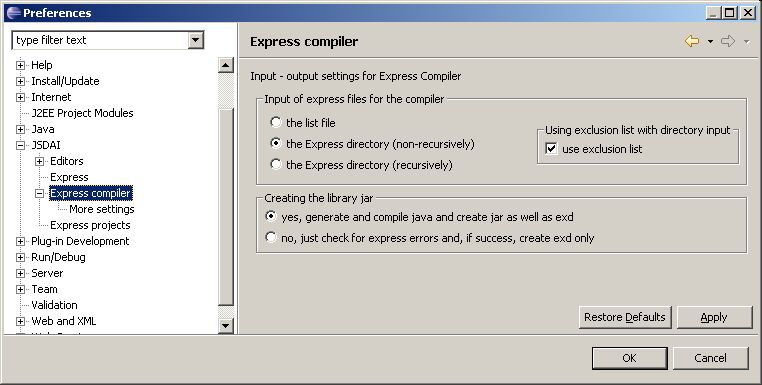

Figure 1. Preferences dialog
window, Express compiler panel
Note.
You can set your own settings for an Express compiler while
creating
a new Express
project or by going to already created Express project preferences
(right click
on the project and select Properties
-> Express -> Input - output).